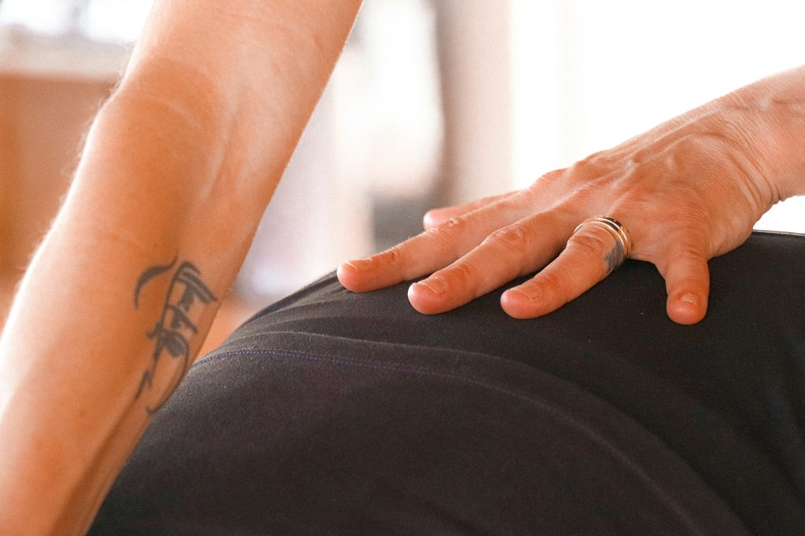

Beckenbodentherapie Innsbruck
Die Mitte,
die alles hält.
Beckenbodenphysiotherapie für Frauen und Männer – diskret, fachkundig und ohne Tabus. Mit Anna Gassner, MSc, im Hallenbad Amras.

Warum der Beckenboden zählt
Für jeden
Menschen wichtig.
Die Beckenbodenmuskulatur stabilisiert die Körpermitte und wirkt bei essenziellen Körperfunktionen mit – sie ist für jeden Menschen wichtig.
Trotzdem reden die wenigsten darüber. Beschwerden rund um Blase, Darm, Sexualität oder nach einer Geburt oder Operation sind häufig mit Scham verbunden. Bei uns musst du nichts erklären, wofür du dich schämen müsstest: Wir hören zu, untersuchen sorgfältig und erarbeiten mit dir einen Weg.
„Ich begleite dich auf dem Weg, deinen eigenen Körper besser kennenzulernen und zu verstehen. Ich freue mich darauf, dir zu helfen, dein volles Potential auszuschöpfen.“
Indikationen
Wobei
wir dich begleiten.
Beckenbodenphysiotherapie kann in vielen Lebensphasen sinnvoll sein – nicht nur nach einer Geburt. Typische Gründe für eine Behandlung bei uns:
- Schwangerschaft & RückbildungBegleitung während der Schwangerschaft und in der Zeit danach.
- Verschiedene Arten der InkontinenzWenn Blase oder Darm nicht mehr zuverlässig dicht halten – etwa beim Husten, Lachen oder Laufen.
- SenkungszuständeWenn sich Organe im Becken nach unten verlagern und Druck- oder Fremdkörpergefühl entsteht.
- Sexuelle DysfunktionenAuch Schmerzen beim Geschlechtsverkehr.
- Beckenboden-HypertonusEin dauerhaft zu stark angespannter Beckenboden.
- Blasen- & DarmentleerungBeschwerden bei der Entleerung sowie Verdauungsbeschwerden.
- LeistenbrücheBegleitende Therapie rund um die Körpermitte.
- RektusdiastaseWenn die geraden Bauchmuskeln auseinanderweichen – häufig nach einer Schwangerschaft.
- Prostata-OPPrä- und postoperativ bei Adenomektomie und Prostatektomie.

Untersuchung & Übungen
In Ruhe.
In deinem Tempo.
Am Anfang steht ein ausführliches Gespräch und eine sorgfältige Untersuchung. Dazu gehört bei Bedarf auch eine interne Palpation – also das Ertasten der Beckenbodenmuskulatur von innen. Ob das für dich passt, besprechen wir vorab gemeinsam.
Aus dem Befund entstehen maßgeschneiderte Übungen, die du in deinen Alltag mitnimmst – damit du deinen Körper besser verstehst und gezielt ansteuern lernst.
Auch für Männer
Prostata?
Beckenboden.
Der Beckenboden ist kein reines Frauenthema. Vor und nach einer Prostata-Operation – einer Adenomektomie oder einer Prostatektomie – kann gezieltes Beckenbodentraining ein wichtiger Teil der Behandlung sein.
Auch Männer mit Inkontinenz, Schmerzen im Beckenbereich oder Beschwerden bei der Blasen- und Darmentleerung sind bei uns richtig. Ein Anruf genügt – du musst am Telefon nicht ins Detail gehen.
Überweisung & Verrechnung
Keine eigene
Überweisung nötig.
-
Überweisung
Eine normale Überweisung für Physiotherapie (z. B. PT03, Heilgymnastik) gilt auch für die Beckenbodentherapie.
-
Verrechnung
Beckenbodentherapie wird wie Physiotherapie verrechnet: Privattarif, Rechnung bei der Kasse einreichen, anteilige Rückerstattung – laut bisherigen Angaben ca. 55 € pro Therapiestunde. [BITTE PRÜFEN]
-
Termin
Telefonisch unter 0512 / 36 60 02 oder per E-Mail an info@phit.cc.
Ein Anruf
genügt.
Vereinbare deinen Termin bei Anna Gassner, MSc. Amraser Straße 3, 1. Stock – im Städtischen Hallenbad Amras.